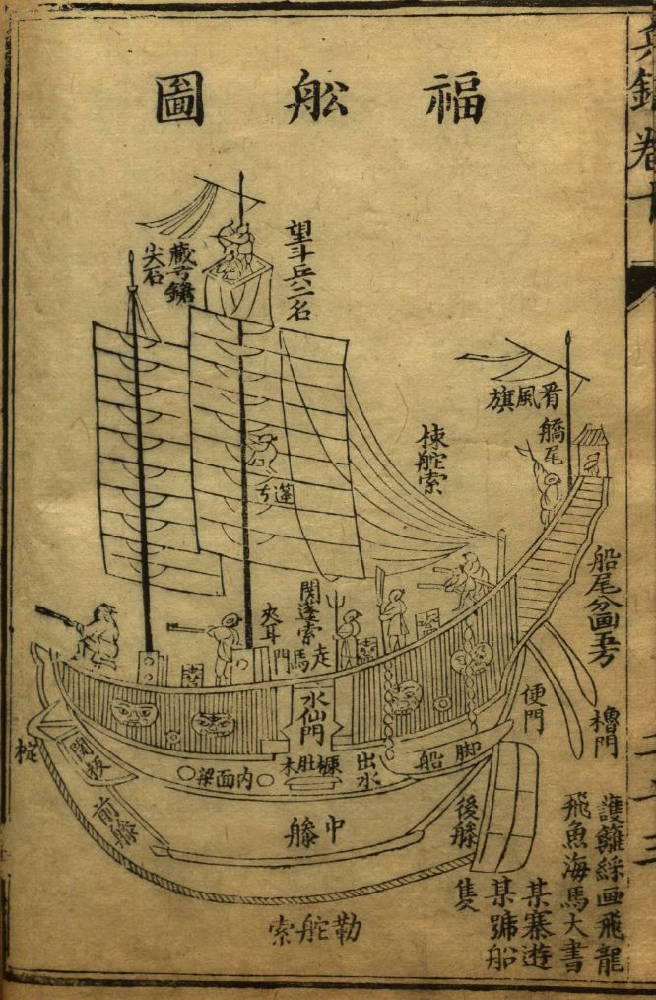
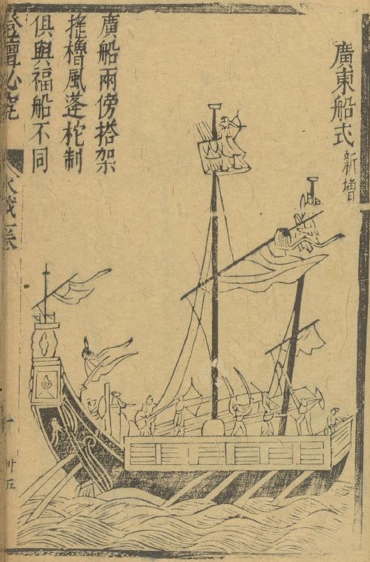
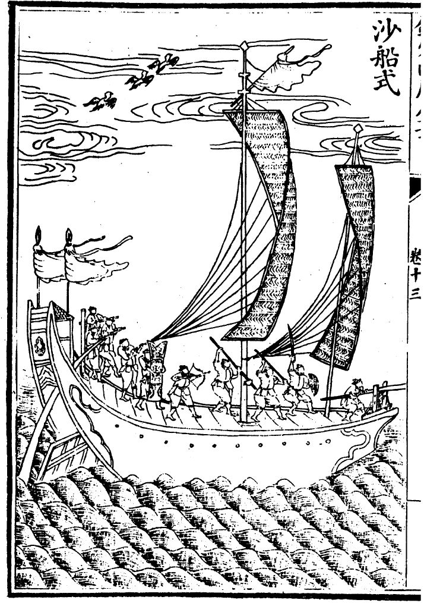
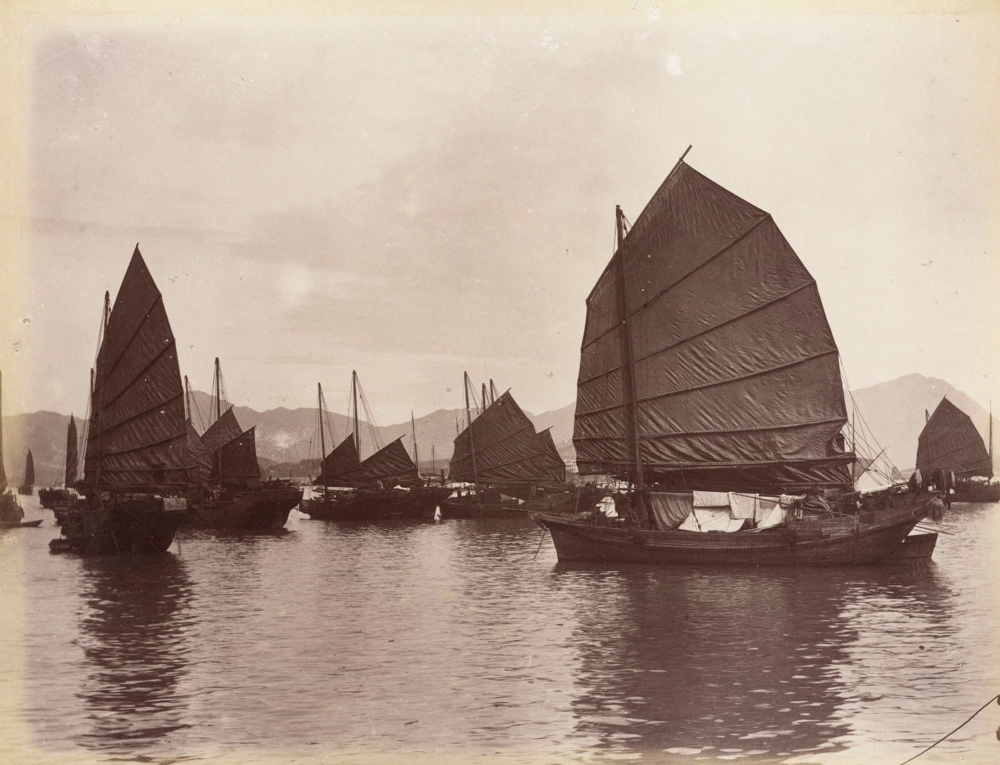
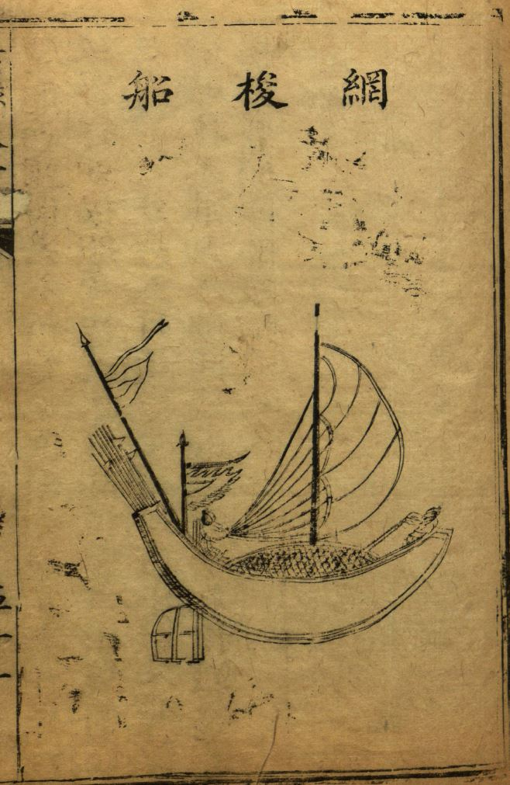
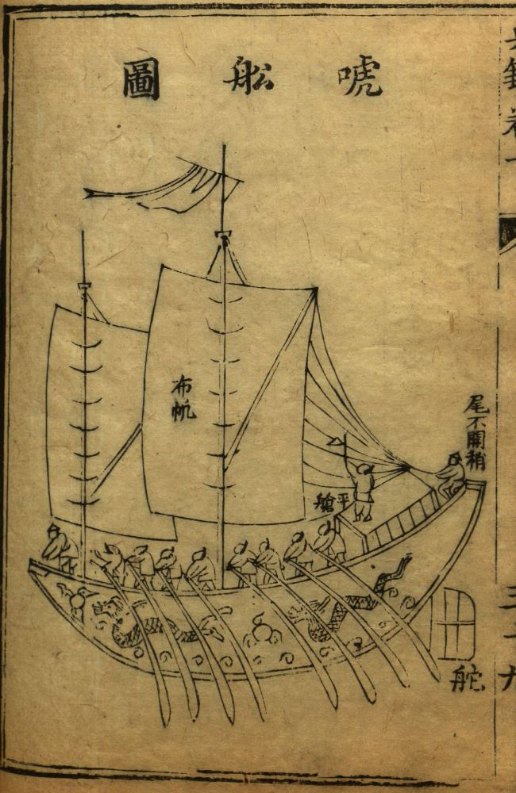
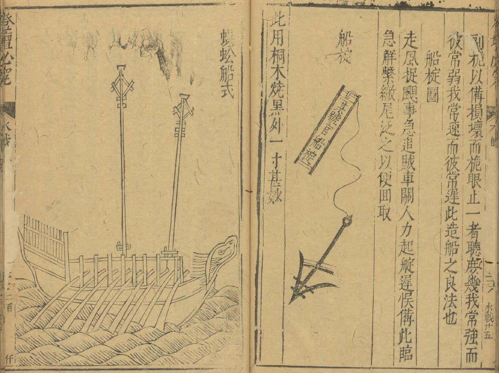
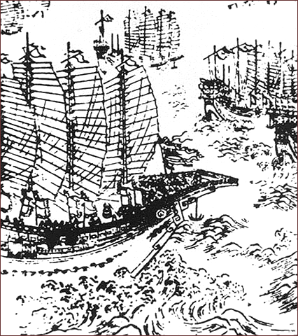

时间边界
项目背景是 1571-1644 年的晚明海贸世界。这个阶段的关键节点包括月港、澳门、广州、马尼拉、马六甲和日本贸易网络。
项目依据：本站首页与地理资料库已将时间边界设为 1571-1644。
1571-1644 · 中式帆船
船只资料库
本页把 1571-1644 年游戏背景中最适合使用的中式帆船整理成可直接服务玩法的资料板块。这里不把“中式帆船”写成单一船型，而是拆成福建、广东、江南、浙江沿海和海防体系中的不同船只。
资料用于确定船只在世界观中的位置；游戏判断用于决定速度、载货、吃水、抗风浪、战斗和港口限制。
总定位
项目背景是 1571-1644 年的晚明海贸世界。这个阶段的关键节点包括月港、澳门、广州、马尼拉、马六甲和日本贸易网络。
项目依据：本站首页与地理资料库已将时间边界设为 1571-1644。
中式帆船常按建造地区、航行水域、结构特征或军事用途命名。福船、广船、沙船、鸟船等名称反映的不是现代工业标准型号，而是地方工艺和用途系统。
来源线索：中国帆船条目；福船条目；明代海防文献如《筹海图编》《纪效新书》。
主力远洋贸易使用福船、广船；侦察与走私使用鸟船、快船；护航和近岸战斗使用海沧船、蜈蚣船；江南和北方转运才突出沙船。
判断依据：船型的航区、吃水、载货和战斗用途不同，能自然转化为游戏属性。
核心船型

福船是晚明福建海商、月港、泉州和漳州贸易圈最适合采用的主力船型。明代海防资料常描述其高大、首尾高、尖底、耐风浪，适合外海航行，也能武装化。
它的弱点同样明确：吃水深，近岸浅滩和逼岸停泊不方便，往往需要小船接驳。这个缺点很适合做成港口和航道机制。
游戏定位：玩家中后期主船；远洋商船；武装商船；高载货、高抗浪、低浅水适应。
来源线索：福船条目；《筹海图编》与《纪效新书》中关于福船优缺点的记述。

广船适合广州、澳门、珠江口和南海贸易线。它代表广东地区造船传统，常被概括为用料较考究、结构坚固，也能进入战船语境。
游戏定位：澳门和广州线高级船；耐久高、造价高、维修依赖广东或澳门船坞。
来源线索：中国帆船条目关于四大船型与广船的概述。

沙船源自江南和长江口语境，平底、吃水浅，适合沙岸、浅水和河海交界。它不应成为福建到马尼拉远洋主力，但适合江南、长江、北方沿海和粮运转运。
游戏定位：近海和内河转运船；便宜、吃水浅、可坐滩、远洋抗浪弱。
来源线索：中国帆船条目关于沙船的说明。

鸟船多见于浙江、福建沿海语境，船首形似鸟嘴，体型较小，帆橹并用，行驶灵活。它适合承担沿海巡哨、送信、走私和小规模交易。
游戏定位：侦察船和走私船；速度快、载货少、浅水适应好、战斗力有限。
来源线索：中国帆船条目关于鸟船的说明。
海防与战斗船型

海沧船可作为福船体系中的中型近岸战船理解。它比大福船小，吃水较浅，用来补足大福船不便逼岸和浅水行动的弱点。

哨船和草撇船适合放在巡哨、追击、探路和船队前锋位置。它们不是主力货船，而是让大船队获得视野、安全和行动弹性的辅助船。
快船和开浪船更适合做成轻型行动单位，用于送信、走私、侦察、诱敌和快速逃离。它们能让玩家在大船贸易之外获得短线任务。

蜈蚣船是明代很有游戏性的战船：帆橹并用，两侧多桨，可装佛郎机炮，适合近海快速作战。它和广东海防、葡萄牙火器输入、抗倭和海盗冲突都能产生联系。
背景船型

郑和宝船属于明初国家远航记忆，不是晚明福建海商世界的日常船只。可以作为旧帝国航海遗产、龙江船厂档案、传闻或官府象征，不建议作为常规可购买船型。
封舟适合官方外交、琉球册封、仪式性任务和朝贡秩序残影。它可连接福建造船与官方海路，但不应替代民间海商船队。
马尼拉大帆船不是中式帆船，但它是中国货物和美洲白银之间的关键远洋节点。它应留在西班牙网络页，作为中式船队的交易对象和远洋订单方。
系统化整理
| 游戏层级 | 推荐船型 | 主要用途 | 机制差异 |
|---|---|---|---|
| 新手与短线 | 鸟船、快船、哨船 | 训练、探路、送信、短途走私。 | 速度快，载货少，损失成本低。 |
| 近海贸易 | 沙船、小型福建船、草撇船 | 江南、长江口、福建沿岸、港口接驳。 | 吃水浅，适合浅滩；远洋安全较差。 |
| 主力远洋 | 福船、广船 | 月港-马尼拉、澳门-马六甲、南海贸易。 | 载货高、抗浪强、成本高、入浅港受限。 |
| 武装护航 | 海沧船、蜈蚣船、武装福船 | 护送商队、反海盗、港口冲突、火器战。 | 需要船员、火器、弹药和维护预算。 |
| 官方与叙事 | 封舟、宝船遗产 | 外交、档案、官府任务、旧航海记忆。 | 强调政治许可和历史象征，不作为普通商船循环。 |
第一批船只系统可以只做四类：快船、沙船、福船、蜈蚣船。快船负责学习风帆和短线任务；沙船负责浅水和低成本贸易；福船负责主线远洋贸易；蜈蚣船负责护航和战斗。等核心循环稳定后，再加入广船、海沧船和封舟。
{kind=link}